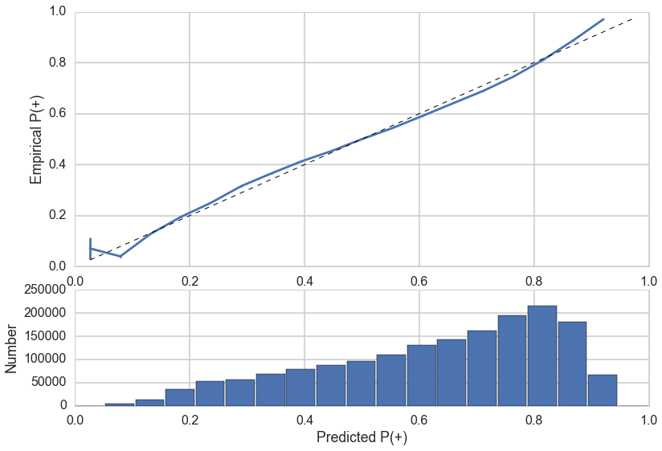

PROJECT OVERVIEW
BACKGROUND AND MOTIVATION
How to treat drug abusers effectively and efficiently is a controversial and timely issue in the United States. In the last 15 or so years, an increasing amount of convicted drug users have been given the option (or have been required) to complete a drug treatment program instead of serving time in prison. Completing treatment instead of spending time in jail have many psychological, financial, health and social benefits.
Many questions surround the current state of drug treatment:
- Are these programs helping drug users return to productive lives?
- Who is likely to succeed and complete these programs and who isn't?
- What type of treatment is right for a specific individual and will they adhere to program guidelines?
- Are there certain demographic groups for whom drug treatment is not working?
Having data driven insights to help answer these questions can have many practical benefits:
- More efficient use of public and private financial resources
- Individually tailored treatment programs to increase probability of successful treatment
- Identification of high risk individuals
- Identification of high performing state drug treatment programs
Besides the possible practical benefits of the analysis of the dataset, the size and scope of dataset present many interesting computational challenges.
THE DATA
The data includes demographic, geographic, education and employment, drug use history, and treatment program outcome information for approximately 9.8 million treatment episodes between the years 2006 and 2011. The data does not contain information relating to drug use relapse after the termination of the treatment episode.
The data is made public by the Substance Abuse & Mental Health Services Administration (SAMHSA) and the data is hosted by the Inter-university Consortium for Political and Social Research (ICPSR) at this website. The data consists of 65 features, most of which are entirely categorical. The specific data utilized for this analysis in .tsv format can be downloaded from this link.
PROJECT OBJECTIVES
- Predict whether new drug treatment episode will conclude positively
- Predict the probability of positive conclusion of a new treatment episode
- Understand the drivers of successful drug treatment
- Identify profiles of drug users particularly vulnerable to non-completion of treatment
- Distinguish between state treatment program adherence rates
Hypothetically, with this tool, a drug treatment program administrator could identify the different probabilities of completion of a variety of treatment programs for a given individual and, in turn, make an informed decision that could lead to more efficient use of resources.
METHODOLOGY
The data was provided in a very organised and well documented fashion but, as with most data, there were many missing values. The missing data were either dropped, made equal to the most frequent value or imputed using a random forest algorithm. Then, for the remaining features, a web scraping routine was developed to gather descriptions for the numerically encoded categories. Using these descriptions we could then explore the data by visualising the effect of single and dual variables on treatment adherence rate. Also, further visual exploration of the data was done using Tableau. From the insights gained from the exploratory analysis the features were selected and random forest, 'Elastic Net' multiple logistic regression and gradient boosted tree classifiers were created. Finally, the three models were combined using a unregularized logistic regression model with the final output being predictive probabilities of treatment program adherence.
EXPLORATORY DATA ANALYSIS
RELATIONSHIP BETWEEN SINGLE FEATURES AND ADHERENCE
To gain some insight about the relationship between demographic, geographic, personal characteristics, treatment type and treatment program adherence we plotted the relationship between the two. Some of the most critical features are plotted below.
These relationships are also explored on a proportional basis. The plots below show the mean adherence rates for individual characteristics as compared to the mean adherence rate from all participants.
Most categories have an adherence rate similar to the population mean, however, certain features stood out. Below are some best and worst groups in terms of adherence rate:
UNDERPERFORMING GROUPS
- 18-20 year olds
- Puerto Rican ethnicity
- Primary source of income: public assistance
- Residents of Wyoming, Virginia, Indiana, Idaho, Georgia, Arizona
- Ambulatory non-intensive outpatient treatment participants
- Medication assisted opioid therapy participants
- Primary drug of abuse: over-the-counter medications
- Primary drug of abuse: heroin
HIGH-ACHIEVING GROUPS
- 55 years and older
- 16 Years or more of education
- Current inmates in correctional facility
- Residents of Tennessee, South Dakota, New Mexico, New Hampshire, Colorado, DC, Florida
- Short term rehabilitation and detox participants
- Criminal justice referral type: DUI
- Primary drug of abuse: alcohol
GEOGRAPHIC FACTORS
The relationships between adherence rates and demographic factors are explored in detail in the following Tableau interactive visualisation.
FEATURE INTERACTIONS
The analysis of single features is useful, but neglects to consider interactions between features. For example, it may be interesting to know what is the adherence rate of heroin users from Wyoming.
The interactions with the greatest difference in adherence rate from the mean are extremely rare occurrences. For example, one of the interaction terms with the lowest adherence rate (of 0%) belongs to an Asian or Pacific islander who is a user of 'other stimulants'. Since there is only one sample that applies, it is unlikely that the true adherence rate for Asian stimulant users is 0%. To form more realistic estimates for the adherence rate for interaction terms, Bayesian inference was performed to shrink (or regularize) small sample size interactions toward the general mean.
The most relevant interaction terms were included as features in the 'Elastic Net' logistic regression.
PREDICTION
Predicted probabilities of treatment adherence were formulated through the creation of three models: random forest classifier, 'Elastic Net' logistic regression with stochastic gradient descent optimization, and gradient boosted trees classifier.
FEATURE IMPORTANCES FROM MODELS
For each of the models, it is possible to explore 'feature importances' which identify the features that aided the model the most in making accurate predictions.
These calculated feature importances reinforce some of the insights that we gained from exploratory data analysis because geographic factors, treatment program type, and age also contribute significantly to the predictive modeling.
CALIBRATION
To evaluate the performance of the models, we check to see if they are properly calibrated. An example of calibration is: do the participants who are predicted to have a 90% probability of adherence adhere 90% of the time? For a perfectly calibrated model, this will be the case for all probability values.
UNCALIBRATED GRADIENT BOOSTED TREE MODEL
As we can see from the above plot, the gradient boosted tree classifier underestimates the probability of adherence as the entire curve falls above the 'perfectly calibrated' dotted line.
Often times, improved calibration leads to improved predictive power. Each of the models were calibrated using 'isotonic' calibration in an attempt to improve their performance.
CALIBRATED GRADIENT BOOSTED TREE MODEL
After performing 'isotonic' calibration, we see a significant improvement in the calibration as the curve is much closer to the 'perfectly calibrated' line.
ENSEMBLE OF THREE MODELS
Finally, the three models were combined in an 'ensemble' model using unregularized logistic regression.
CALIBRATION OF ENSEMBLE MODEL

Model performance was measured using 'Log Loss' which is a measure of error for estimated probabilities. A log loss value of zero signifies that the model has no error.
Another performance metric utilised in analysis was simple accuracy. Probability estimates less than 50% were classified as 'didn't adhere' and above as 'adhered'.
The final ensemble model is well calibrated and with a final log-loss and accuracy scores that are very similar to those from the GBT model. The ensemble model is a significant improvement upon the baseline 63% model as it yields a higher accuracy and gives a personalized prediction for each individual.
CONCLUSIONS AND FURTHER RESEARCH
REEVALUATING ASSUMPTIONS
A crucial assumption made that could have affected model performance was to group transferred participants together with participants who completed treatment. Although they are both 'positive' conclusions to treatment, they are quite different results. Model performance could be improved through further investigation of the causes for transferring participants and possibly implementing a ternary response variable (completed, transferred, not completed).
MODEL IMPROVEMENT
As expected, the tree based models performed very well on this dataset. Since the models were trained on such a large quantity of data and had very similar performance, it is likely that the main way to improve performance is not to implement more complex models, but to focus more energy on feature engineering.
MORE FEATURE ENGINEERING
Although there was a significant improvement upon the baseline models, the overall model still struggles with the outcome prediction for some individuals. There are many other factors that can contribute to treatment completion. Including data relating to family ties (contact with parents, having brothers and sisters) could help improve the model. As to protect the anonymity of the treatment providers, the dataset provided limited information about details from the treatment program. Data relating to treatment program affiliation (private, public, faith based) as well as program details such as amount of time in contact with health professionals and psychiatric care could also increase the accuracy of the model.